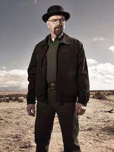
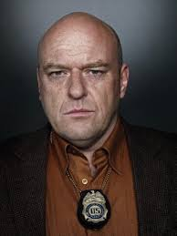
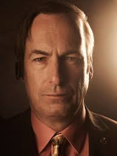
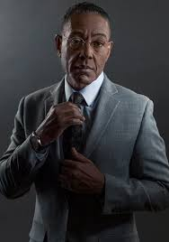

Breaking Bad(2013)
Sinopse
O professor de química Walter White não acredita que sua vida possa piorar ainda mais. Quando descobre que tem câncer terminal, Walter decide arriscar tudo para ganhar dinheiro enquanto pode, transformando sua van em um laboratório de metanfetamina.
Informações Básicas
Ano: 2013
Gênero: Drama
Duração: 5 temporadas (62 episódios)
Personagens principais
- Walter White
- Jesse Pinkman
- Skyler White
- Hank Schrader
- Saul Goodman (James McGill)
- Gustavo ‘Gus’ Fring
- Mike Ehrmantraut
| Personagem | Ator/atriz | Descrição | Imagem |
|---|---|---|---|
Walter White |
Bryan Cranston | Um professor de química do ensino médio que se transforma em fabricante de metanfetamina após ser diagnosticado com câncer de pulmão inoperável. A necessidade de garantir o futuro financeiro de sua família o leva a uma vida de crime. Walter assume o pseudônimo “Heisenberg” à medida que sua personalidade e ações se tornam cada vez mais vilanescas. |
 |
| Voltar à lista | |||
| Jesse Pinkman | Aaron Paul | Ex-aluno de Walter White, Jesse se torna seu parceiro na produção de metanfetamina. Com um passado marcado por problemas e laços com o mundo das drogas, Jesse passa por uma evolução significativa ao longo da série, muitas vezes confrontado com a moralidade de suas escolhas. Apesar de suas falhas, ele demonstra momentos de grande cuidado e lealdade, especialmente em relação às pessoas que ama, sendo um dos principais persoangens de Breaking Bad. |  |
| Voltar à lista | |||
| Skyler White | Anna Gunn | Skyler é a esposa de Walter White e mãe de Walter Jr. e Holly. Conforme ela descobre as atividades criminosas do marido, Skyler é arrastada para um mundo de moralidade questionável. Ela luta para manter sua família segura enquanto navega pelas consequências das escolhas de Walter, eventualmente se envolvendo na lavagem de dinheiro para proteger seus filhos. | |
| Voltar à lista | |||
| Hank Schrader | Dean Norris | Hank é o cunhado de Walter White e um dedicado agente da DEA. Seu bom humor e bravata escondem uma mente afiada e um compromisso inabalável com seu trabalho. A caça a “Heisenberg” torna-se sua obsessão, sem saber que o procurado está tão próximo. Hank é um personagem complexo, cuja busca pela justiça o coloca em perigo constante. |  |
| Voltar à lista | |||
| Saul Goodman (James McGill) | Bob Odenkirk | Advogado astuto e colorido, Saul Goodman se torna essencial para Walter e Jesse, oferecendo não apenas assistência legal, mas também envolvimento em suas operações de drogas. Com um conhecimento íntimo dos cantos mais obscuros da lei, Saul é tanto um facilitador quanto um complicador n a vida dos protagonistas, sendo, junto com Walter, Jesse e Gus um dos personagens mais populares de Breaking Bad. |  |
| Voltar à lista | |||
| Gustavo ‘Gus’ Fring | Giancarlo Esposito | Gus Fring é um empresário respeitado e filantropo, mascarando sua verdadeira identidade como um dos maiores distribuidores de drogas no sudoeste dos EUA. Seu controle frio e cálculo sobre seu império de drogas e sua habilidade de manter uma fachada respeitável fazem dele um adversário formidável e um dos personagens mais célebres de Breaking Bad. |  |
| Voltar à lista | |||
| Mike Ehrmantraut | Jonathan Banks | Mike é um ex-policial que trabalha como investigador privado, guarda-costas e solucionador de problemas para Saul e, posteriormente, para Gus. Conhecido por sua eficiência, habilidade tática e rígido código moral, Mike é um personagem complexo que lida com as consequências de suas escolhas enquanto tenta proteger sua família. |  |
| Voltar à lista | |||